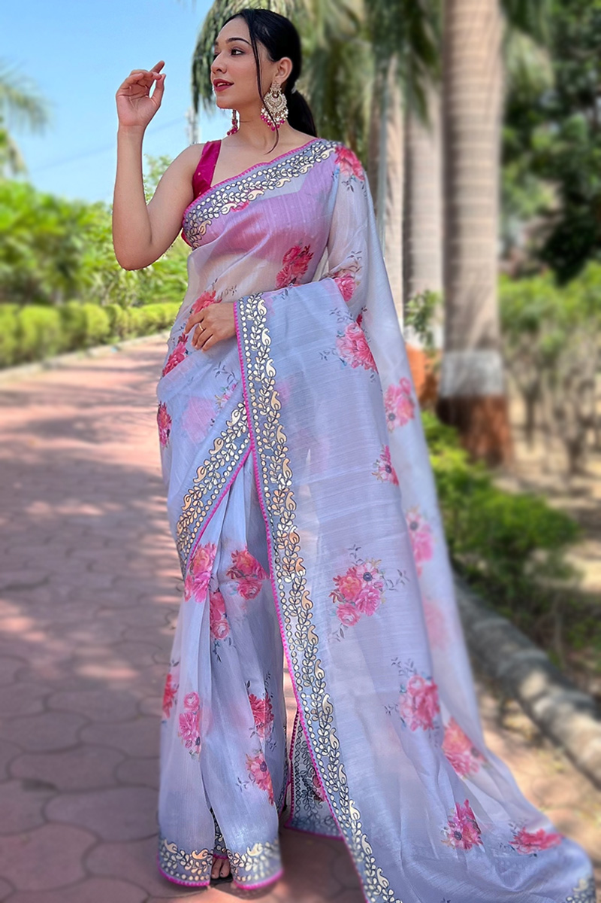
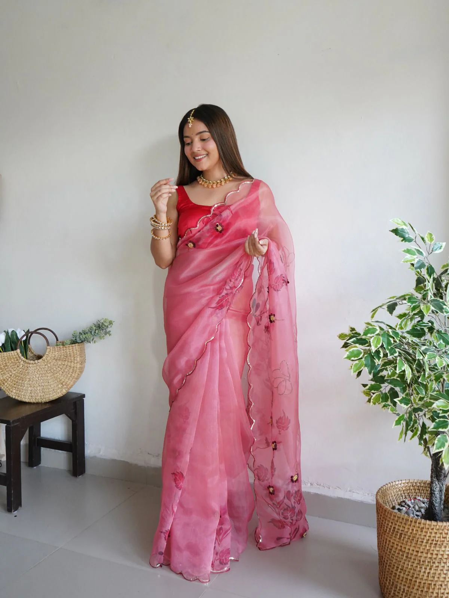
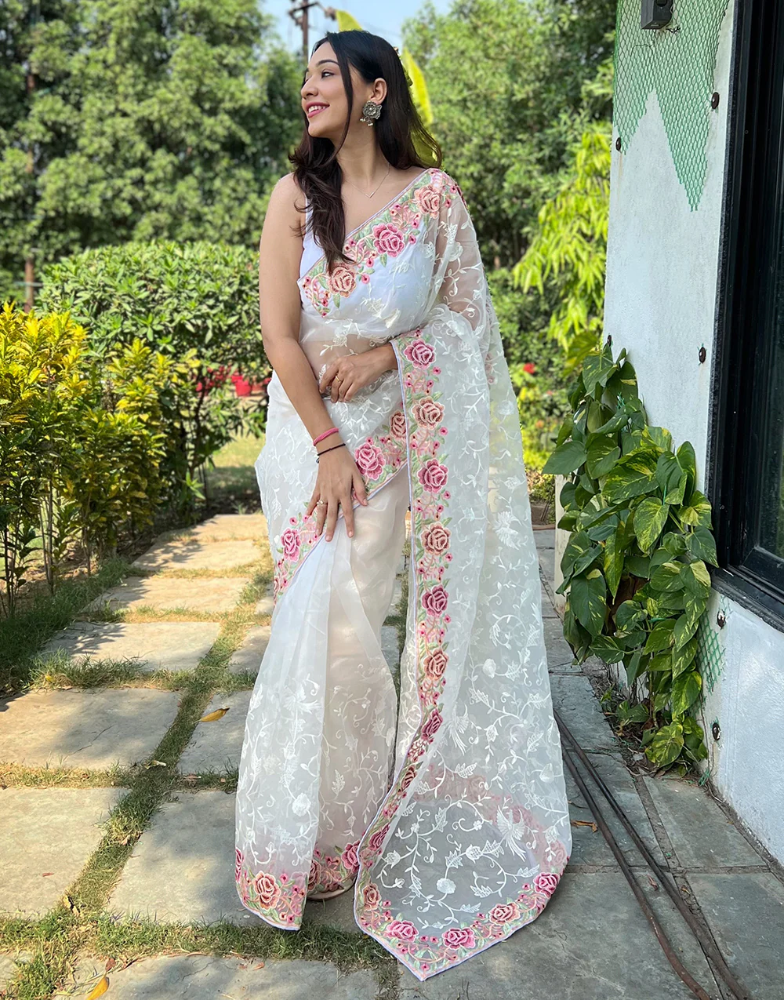
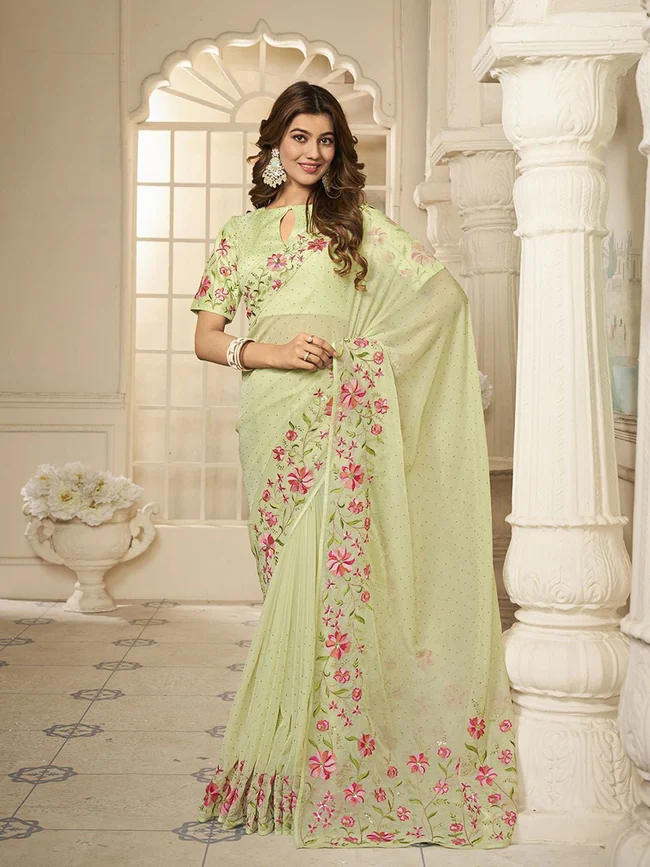

ORGANZA SAREE
- Varanasi




Organza is a lightweight, sheer, plain-woven fabric that was originally made from silk. The material can also be made from synthetic fibers, primarily polyester and nylon. Synthetic fabrics are slightly more durable, but the fabric is very delicate and prone to frays and tears
Organza sarees are a popular choice for Indian women for many occasions, from weddings to farewell parties